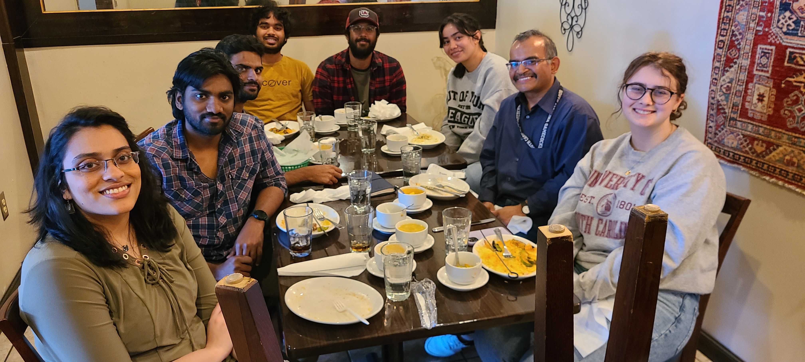
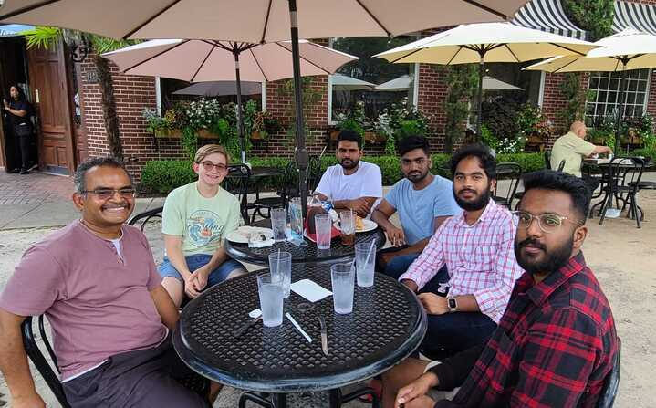

|
Home | Activities | Awards | Demos | Funding | Members | NewsLog | Patents | Projects | Publications |
|
|
AI for Society (AI4S) group at the AI Institute is focused on enabling people to make rational decisions despite real-world complexities of poor data, changing goals, and limited resources by augmenting their cognitive limitations with technology. Lead by Prof. Biplav Srivastava, the group works in neuro-symbolic methods, trusted AI, and applications of data-driven methods to society. We focus on innovating and applying AI techniques for hard problems facing the society with an inclusive, value-driven, focus. |

AI4Society @ AAAI 2023

ElectionBot-SC Demo @TechInLaw '24

Team Lunch - Spring '23

AI for Credible Elections Workshop @AAAI '23

Team Lunch - Summer '23

Holi Celebration @ 2024
|
|
2024
October
Our student paper, 'Towards Enhancing Road Safety in South Carolina Using Insights from Traffic and Driver-Education Data' is accepted in the AAAI-25 Student Abstract and Poster Program. Our magazine, 'AI-Assisted Research Collaboration With Open Data for Fair and Effective Response to Call for Proposals' is accepted at AAAI AI Magazine, 2024. Our paper, 'Building a Plan Ontology to Represent and Exploit Planning Knowledge and Its Applications' is accepted at Eighth International Conference on Data Science and Management of Data, India, 2024. For more details, visit Planning-Ontology. We have launched ElectionBot-SC, a chatbot for voters to help get information about 2024 elections in South Carolina. See a demo and participate in IRB-approved studies. Biplav Srivastava participated as a panelist at the University of South Carolina School of Law’s symposium titled “AI and Elections” on Oct 4, 2024. Click here for more details. September
Our paper, 'Towards Effective Planning Strategies for Dynamic Opinion Networks' is accepted at Thirty-eighth Annual Conference on Neural Information Processing Systems (NeurIPS), Vancouver, 2024 for poster presentation. LinkedIn post Kausik Lakkaraju started his internship at Mayo Clinic (Sep - Dec 2024). |
|
|
|
|